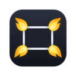

Hot Corners
Fareyi sayfanın bir köşesine götür, o köşeye atadığın görev çalışsın.
Hot Corners kuruldu
Hemen denemek için fareyi bu sayfanın sol üst köşesine götür: tüm sekmelerin açılır.
- Sol üst köşe sekme görünümünü açar, sağ alt köşe son kullandığın sekmeye döner. Aşağıdan değiştirebilirsin.
- ile tamamen kapatıp açabilirsin. Araç çubuğundaki ikon kapalıyken gri görünür.
- İkona sağ tıklayarak 15 dakika ya da 1 saat duraklatabilirsin. Süre bitince kendiliğinden açılır.
- İkonu her an görmek için Chrome'un yap-boz simgesinden Hot Corners'ı sabitle.
Köşeler
Her köşeye bir görev seç. İstersen bir tuş şartı ekle: o köşe yalnızca tuş basılıyken çalışır, böylece fare yanlışlıkla köşeye kaçtığında hiçbir şey olmaz.
F11 ile tam ekranda gerçek ekran köşeleri gibi çalışır.
Davranış
Görev çalışmadan önce imlecin köşede durması gereken süre.
Köşenin ne kadar büyük kabul edileceği. Küçük değer daha az yanlış tetikleme demek.
Görev çalıştığında köşede kısa bir parıltı belirir.
Bir sayfa tam ekrana geçtiğinde (video, oyun) köşeler çalışmaz.
Klavye kısayolları
Her şeyi tek tuşla durdurur; tekrar basınca geri açar.
Köşeye gitmeden tüm sekmeleri gösterir.
Kısayolları Chrome'un eklenti kısayolları sayfasından değiştirebilir veya kaldırabilirsin.
Devre dışı siteler
Bu sitelerde köşeler hiç çalışmaz. Araç çubuğundaki ikondan da tek tıkla ekleyebilirsin.
Henüz site eklenmedi.